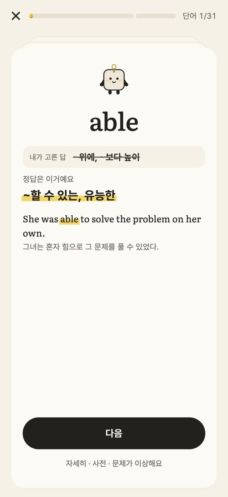
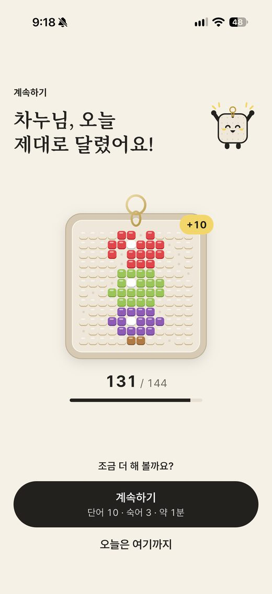
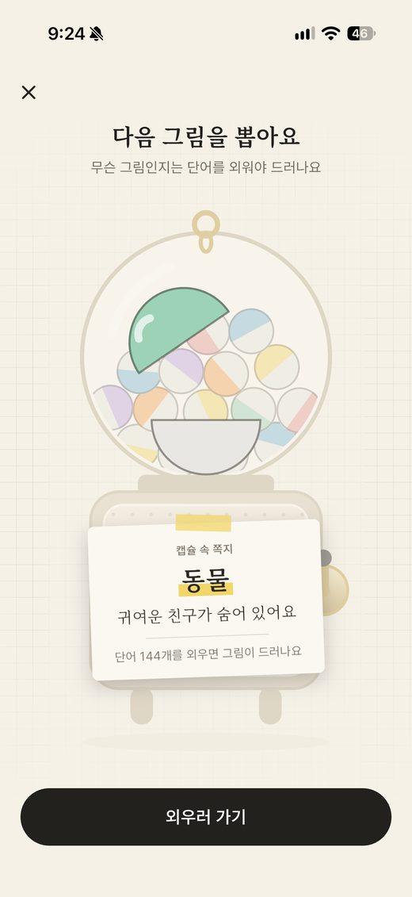
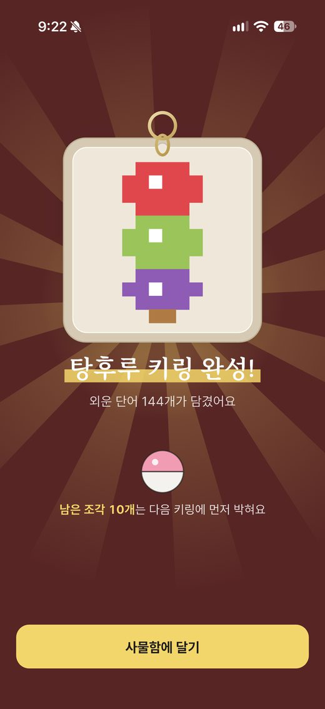
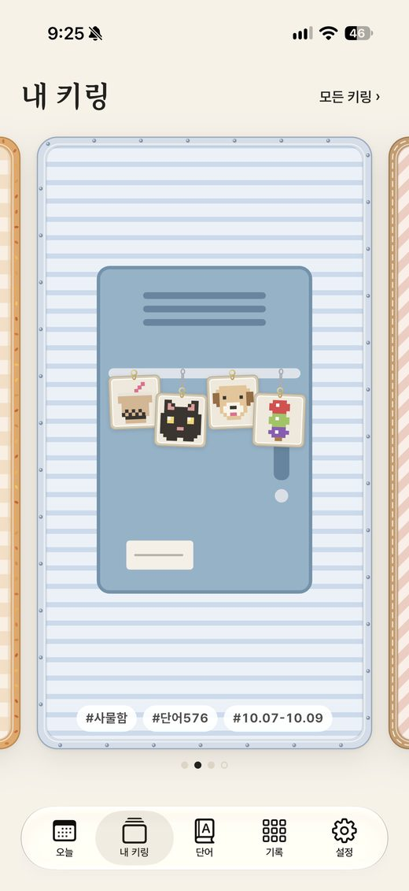
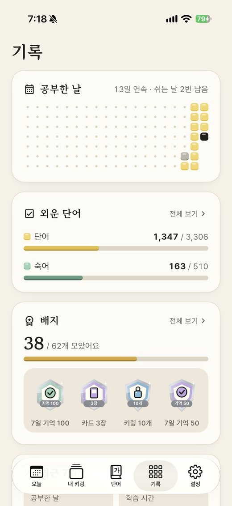

기초 단어부터
다시 채워요
지문을 읽다 모르는 단어에서 자꾸 멈춘다면, 여기서부터 시작하면 돼요.
숙어 510개
난이도도 알아서
쉬어도 칠한 칸은 그대로
하루 공부는 이렇게
외웠다고 치는 기준은 하나예요. 보자마자 떠오르는가.
 1
1카드로 먼저 봐요
새 단어는 다섯 장씩 뜻 · 발음 · 예문을 먼저 보고, 바로 그 다섯 개를 풀어요.
 2
2먼저 떠올리고 골라요
보기는 1초 뒤에 나와요. 4초 안에 떠오르면 통과. 영어 → 뜻, 뜻 → 영어를 각각 3번 연속 맞히면 외운 단어예요.

3틀리면 정답과 예문
틀린 단어는 따로 모아 다시 만나요. 위젯에도 떠서 지나가다 한 번 더 봐요.

4외운 만큼 한 칸씩
외운 단어마다 키링 판에 조각이 하나 끼워져요. 오늘 얼마나 했는지 숫자보다 그림으로 보여요.
잊을 만하면 다시 물어봐요
어제 외운 단어도 자고 나면 흐려져요. 그래서 외운 단어는 날을 두고 세 번 다시 확인해요.
세 번 다 맞히면 단단히 외운 단어. 틀려도 키링 조각은 빠지지 않아요. 다시 외우면 돼요.
난이도는 단숙이가 맞춰요
너무 쉬우면 배우는 게 없고, 너무 어려우면 지쳐요. 푸는 걸 보고 20문제마다 한 칸씩 맞춰요.
푸는 걸 보고 맞춰요
최근 40문제에서 처음 물은 문제를 4초 안에 맞힌 비율
- '이미 알아요'를 자주 누르면 한 칸 올려요.
- 틀린 단어가 30개 넘게 쌓이면 한 칸 내려 정리부터 해요.
- 며칠 뒤 다시 확인한 단어를 70% 아래로 기억하면 올리지 않아요.
- 며칠 쉬다 온 날은 하루만 한 칸 쉽게 시작해요.
단계가 바꾸는 것
| 쉽게 | 보통 | 어렵게 | |
|---|---|---|---|
| 헷갈리는 보기 | 1개 | 2개 | 3개 |
| 아는 단어 빨리 넘기기 | 안 함 | 1초 | 1.5초 |
| 새 단어 초 · 중 · 고 | 7 : 3 : 0 | 4 : 4 : 2 | 1.5 : 3.5 : 5 |
외웠다고 보는 기준(4초 · 양쪽 3번 연속)은 어느 단계든 같아요.
키링은 공부로만 모아요
캡슐 머신으로 도안을 뽑고, 무슨 그림인지는 외워야 보여요. 144칸을 채우면 키링 완성. 지금 58종이에요.




학습 연구가 뒷받침하는 단숙이 공부법
게임처럼 모으지만, 공부 방식은 연구에서 가져왔어요.
알아보기보다 떠올리기
보기를 보고 알아보는 것보다 스스로 떠올린 단어가 훨씬 오래 남아요. 그래서 보기를 1초 늦게 보여 줘요.
Karpicke & Roediger 2008 · Yang 외 2021 · Agarwal 외 2021몰아서보다 나눠서
기억이 흐려질 즈음 다시 꺼내야 오래 가요. 2일 · 7일 · 21일 뒤에 다시 확인하는 이유예요.
Cepeda 외 2006 · Latimier 외 2021 · Kim & Webb 2022바로 떠올라야 읽혀요
지문에서 단어마다 멈칫하면 시간이 새요. 4초 안에, 양쪽으로 여러 번 맞혀야 외운 걸로 쳐요.
Perfetti 2007 · Rawson & Dunlosky 2011 · Webb 2009너무 쉽지도 어렵지도 않게
최근 40문제를 몇 % 맞혔는지 보고 난이도를 맞춰요. 대략 85%를 맞히는 수준에서 가장 빨리 배운다고 해요.
Wilson 외 2019 · Soderstrom & Bjork 2015자주 묻는 질문
어떤 단어가 나오나요?
교육부 고시 교육과정 기본 어휘 3,000개(2015 · 2022 개정, 설정에서 고를 수 있어요)에, 최근 수능 · 모의평가에 두 번 이상 나왔지만 기본 어휘에 없는 기출 보충 286개, 요일 · 월 같은 기초 보충, 그리고 숙어 510개가 나와요.
언제 '외운 단어'가 되나요?
한 단어를 영어 → 뜻, 뜻 → 영어로 각각 3번 연속 맞히면 외운 거예요. 틀리거나 바로 떠오르지 않으면 그 방향만 다시 세요. 카드 아래 A · 가 옆에 조각이 하나씩 끼워지는 게 그 표시예요. 처음 나온 단어를 두 방향 모두 바로 맞히면 금방 외운 단어로 넘어가요. 이미 알아요를 눌러 직접 넘길 수도 있어요.
왜 바로 떠올라야 하나요?
수능 지문을 읽다 단어에서 멈칫하면 시간이 새요. 그래서 보자마자 떠오르는(새 단어는 4초 안) 단어만 '내 것'으로 세요. 늦게 맞혀도 틀린 게 아니고, 몇 번 더 보면 금방 빨라져요. 복습 문제는 내 속도에 맞춰 시간이 조금 넉넉해지고, 숙어는 문장을 읽어야 해서 더 넉넉해요.
너무 쉽거나 너무 어려우면요?
단숙이가 맞히는 걸 보고 난이도를 맞춰요. 술술 맞히면 헷갈리는 보기와 어려운 단어를 더 섞고, 힘들어하면 보기를 덜 헷갈리게 하고 틀린 단어부터 정리해요. 어느 쪽이든 모든 단어를 지나가고, 외웠다고 보는 기준은 같아요. 설정 › 하루 공부 › 난이도에서 직접 고를 수도 있어요.
키링은 어떻게 모아요?
캡슐 머신 손잡이를 두세 바퀴 돌려 키링 도안을 뽑아요. 단어를 외울 때마다 판에 조각이 하나씩 끼워지며 그림이 드러나요. 144개를 외우면 키링이 완성되고, 내 키링 탭의 카드에 하나씩 달려요. 카드는 이어폰 케이스 · 백팩 · 크리스마스 트리 같은 물건 15종이고, 넘기면 바탕도 그 카드에 어울리는 장면으로 바뀌어요. 다 차면 새 카드가 열려요. 키링은 돈이 아니라 공부로만 뽑아요.
배지는 뭐예요?
공부한 날, 외운 단어, 완성한 키링, 공부 습관이 쌓이면 배지를 받아요. 모두 62개(연속 공부 · 공부 시간 배지 포함)이고, 받기 전엔 조건이 안 보이는 숨은 배지도 있어요. 배지를 받으면 다음에 외우는 단어 몇 개가 반짝 조각이 되어 키링에서 금빛으로 반짝여요. 이미 공부해 온 기록도 그대로 쳐 줘서, 업데이트하면 그동안 모은 배지를 한꺼번에 받아요. 기록 탭에서 모은 배지와 다음에 받을 배지를 볼 수 있어요.
앱을 지웠다가 다시 깔면 기록이 사라지나요?
아니요. 공부 기록은 본인 iCloud에 자동으로 저장돼요. 같은 Apple 계정으로 다시 설치하면 처음 열 때 기록을 알아서 불러와요. 처음 열 때 iCloud에서 기록을 찾는 동안 잠깐 기다려요. 설정 › 기록 › iCloud 자동 저장에서 마지막으로 저장한 시각을 볼 수 있어요.
인터넷 없이도 쓸 수 있나요?
네. 단어, 문제, 발음, 기록이 모두 기기 안에 있어요. 발음도 기기 안의 AI 목소리가 만들어요. AI 목소리는 앱을 설치한 뒤 한 번 받아요(받기 전에는 iPhone 기본 음성으로 읽어요). 그 밖에 인터넷은 iCloud에 기록을 저장하고, 오류 · 이용 통계와 문의를 보낼 때만 써요.
틀린 단어는 어떻게 다시 보나요?
따로 찾아가지 않아도 틀린 단어 · 자주 틀린 단어는 오늘 공부 앞쪽에 먼저 나와요. 잠금 화면 · 홈 화면 위젯은 틀린 단어를 떠올려 보기 카드로 보여 줘요. 뜻은 가려 두었다가 점 세 개가 줄어들면 드러나고, 누르면 그 단어 화면이 열려요. 공부하는 날엔 알림으로도 챙겨 드려요.
하루에 몇 개씩 공부하나요?
처음엔 단어 30개 · 숙어 12개예요. 설정에서 바꿀 수 있고, 오늘 몫을 다 하면 계속하기로 더 할 수 있어요. 오늘의 공부 카드 아래에서 오늘 공부 · 복습 · 1분만 중에 고를 수 있어요. 복습은 외운 단어만 다시, 1분만은 익히던 단어 다섯 문제예요. 일주일에 며칠 공부할지 공부하는 요일을 정하면 그날 알림이 와요. 하루 쉬어도 끼운 조각은 빠지지 않아요.
공부한 걸 친구에게 보여 줄 수 있나요?
오늘 몫을 끝내면 요약 화면에서 오늘 카드 공유를 누를 수 있어요. 며칠 동안 단어를 몇 개 외웠는지와, 칠하는 중인 키링이 반쯤 드러난 그림이 한 장에 담겨요. 인스타 스토리, 사진 저장, 메시지로 보낼 수 있어요.
문제 해결
- 발음이 들리지 않아요: 단숙이 발음은 무음 모드여도 나와요. 그래도 안 들리면 음량이 0인지, 블루투스 이어폰에 연결돼 있는지 확인해 주세요. 설정에서 '발음 자동 재생'이 꺼져 있어도 단어 옆 스피커를 누르면 들을 수 있어요.
- 발음이 처음에 조금 늦어요: 기기 안에서 목소리를 만드느라 그래요. 한 번 만든 소리는 저장돼서 다음부터는 바로 나와요.
- AI 목소리가 아니라 기본 음성으로 읽어요: 설치한 뒤 AI 목소리를 받는 중일 수 있어요. 설정 › 발음 목소리에서 받는 중인지 볼 수 있고, 인터넷에 연결한 뒤 앱을 다시 열면 이어서 받아요.
- iCloud 저장이 안 된대요: 설정 앱에서 Apple 계정에 로그인되어 있고 iCloud가 켜져 있는지 확인해 주세요. 인터넷이 연결되면 다음에 앱을 닫을 때 다시 저장해요.
- 위젯에 단어가 안 보여요: 앱을 한 번 열면 위젯이 새로 그려져요.
- 다시 설치했더니 알림이 안 와요: 앱을 열면 알림을 다시 물어봐요. 그때 허용해 주세요. 이미 거절했다면 설정 앱 › 단숙이 › 알림에서 켤 수 있어요.
문의하기
궁금한 점, 틀린 뜻이나 예문 제보, 기능 제안 모두 환영해요. 앱의 설정 › 문의하기에서 바로 보내도 되고, 메일도 좋아요. 보통 하루 안에 답장해요.
✉︎ fastchanoo@gmail.com